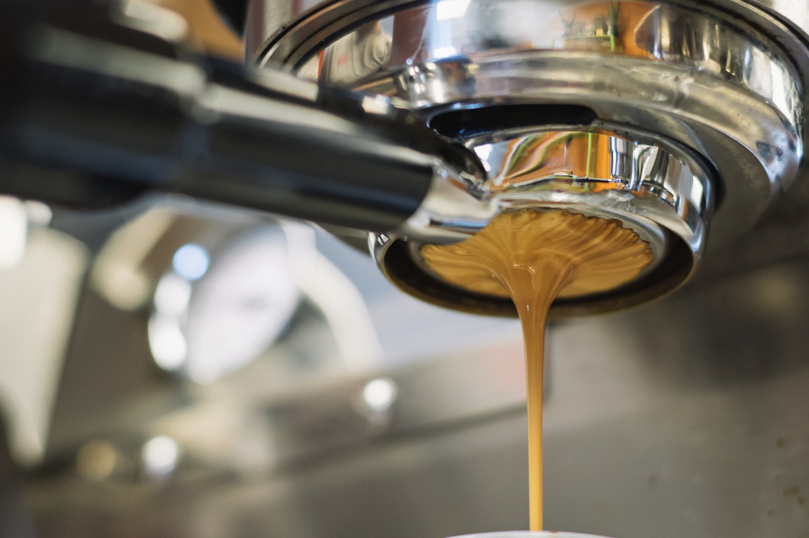
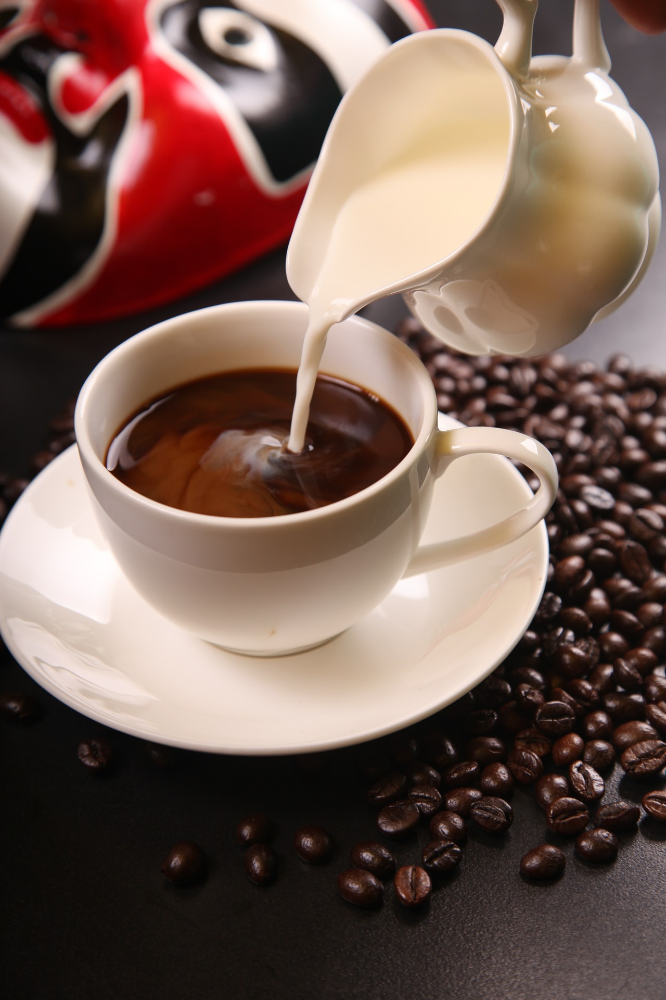
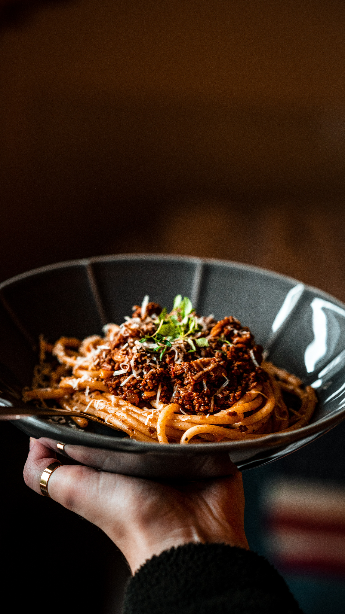
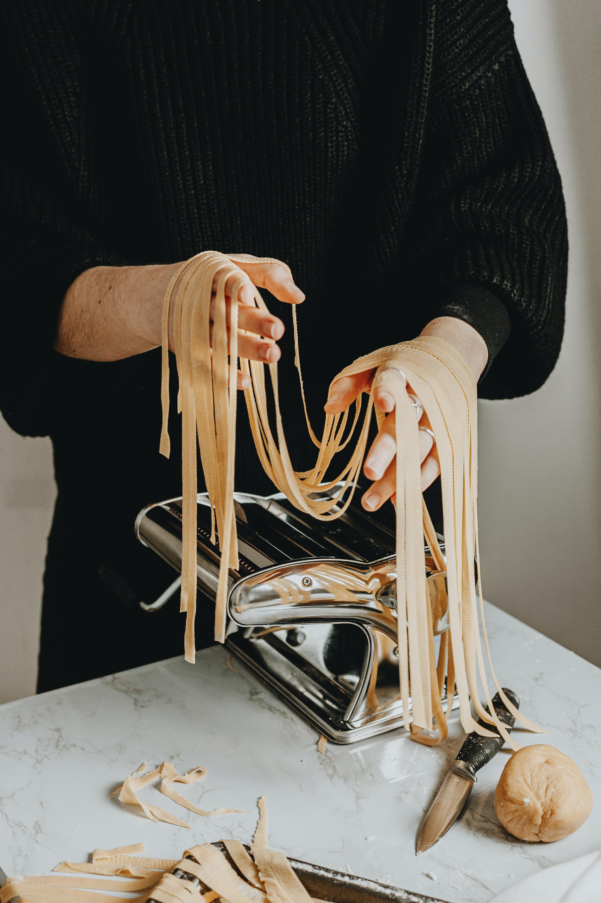
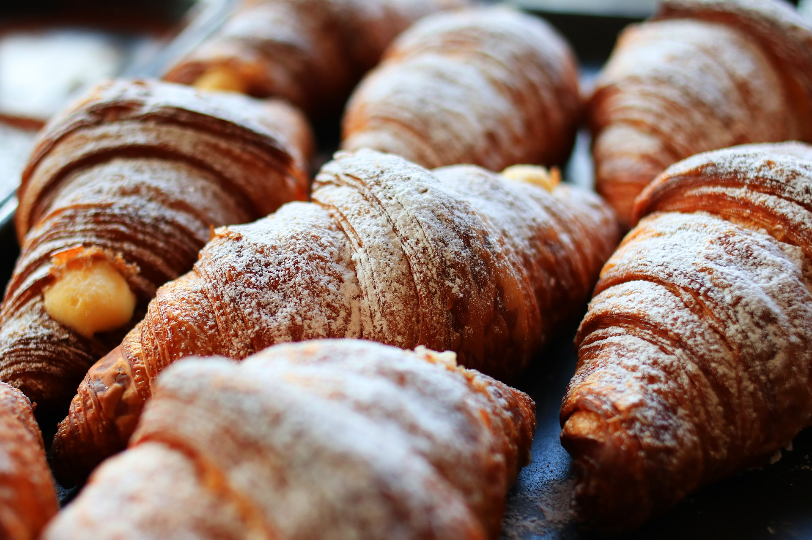

美味しいコーヒーと食事で、
最高のひとときを。
当店では、こだわりのコーヒーだけでなく、お食事メニューにも力を入れています。自家焙煎の香り高いコーヒーと、その相性を考え抜いた多彩な料理は、五感を満たす絶妙なハーモニー。
素材選びや調理法にも一切の妥協をせず、常に新鮮な食材を活かした一皿をご提供。季節によって変化するメニューには、その時期ならではの味わいも含まれており、飽きることなく楽しんでいただけるはずです。
大切な人と交わす会話や、ふと立ち止まりたくなるような一人の時間を、香り高いコーヒーと彩り豊かな料理がいっそう特別なひとときに変えてくれます。


本場イタリアで培った
自慢のパスタ
オーナーが本場イタリアで修業を積んだ経験を余すことなく活かし、素材の持ち味を最大限に引き出したパスタをご用意しています。オリーブオイルやハーブなど、厳選された食材はイタリアの風をそのまま運んでくれるかのよう。
小麦本来の香りと弾力を楽しめる麺と、深みあるソースが織り成す味わいは、一度口にすれば忘れられないほどの存在感を放ちます。


ほどよい甘さの
自家製こだわりクロワッサン
香ばしく焼き上げたクロワッサンは、軽やかな食感とほんのりとした甘さが魅力。バターの豊かな風味とサクサクの生地が織り成す贅沢な味わいは、朝食やティータイムにぴったりです。
